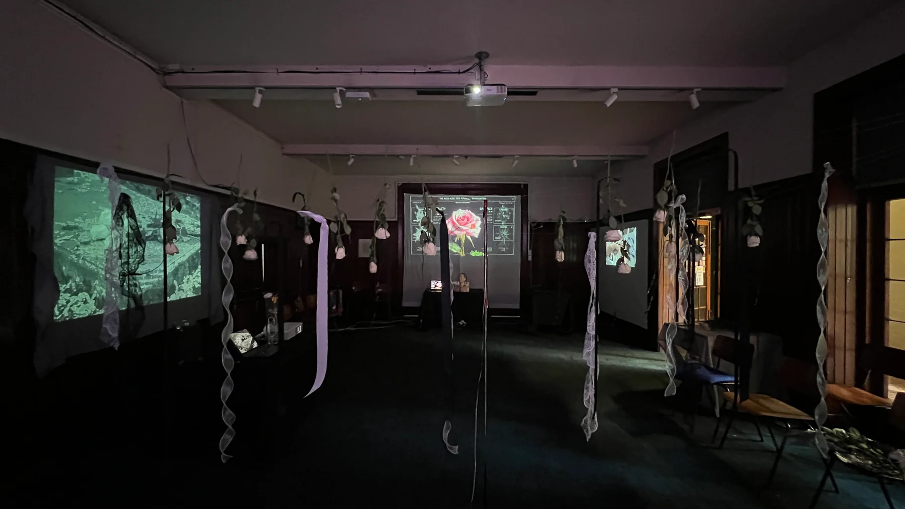
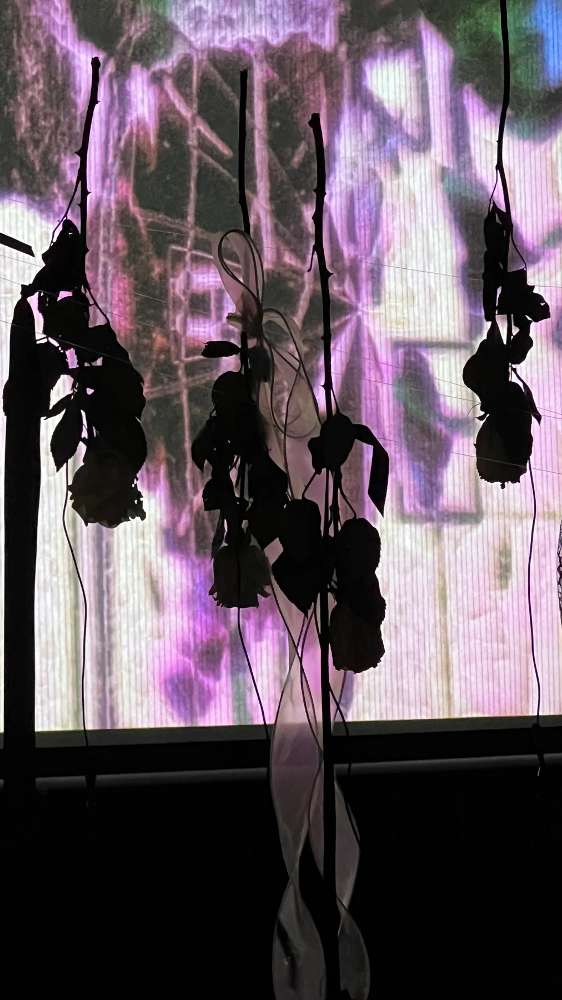
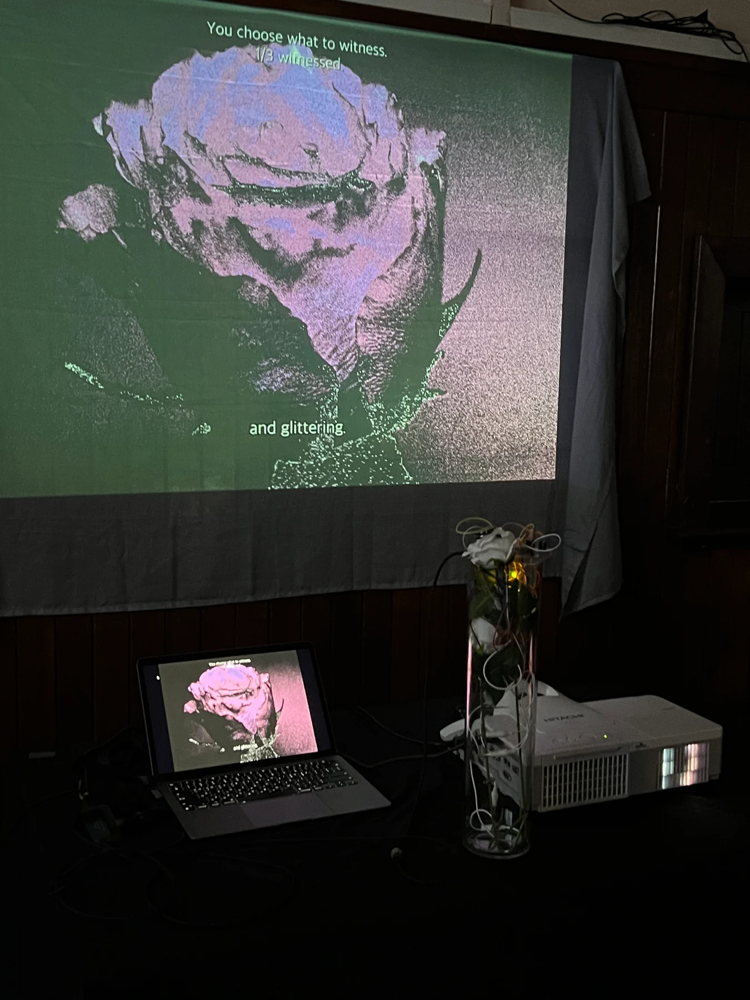
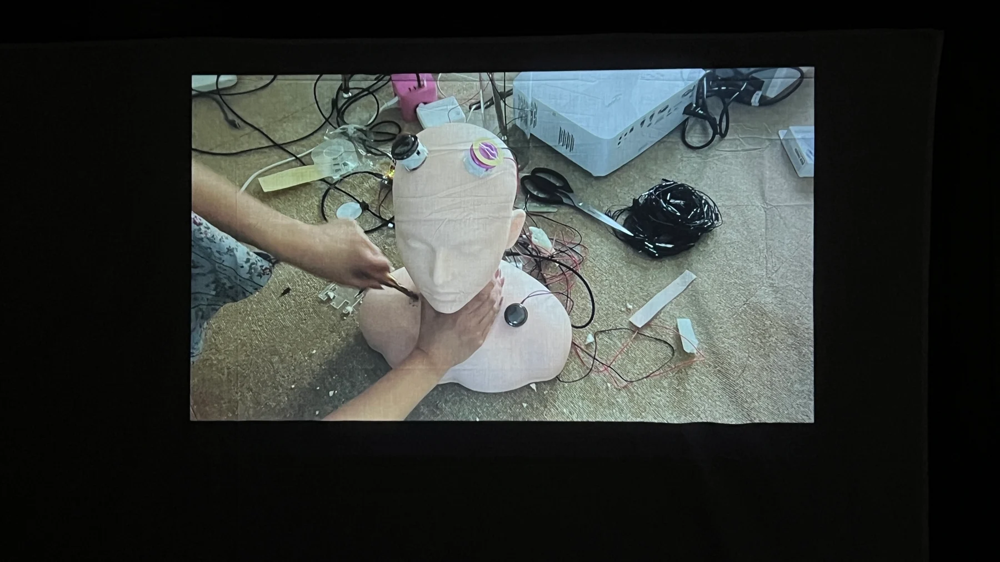
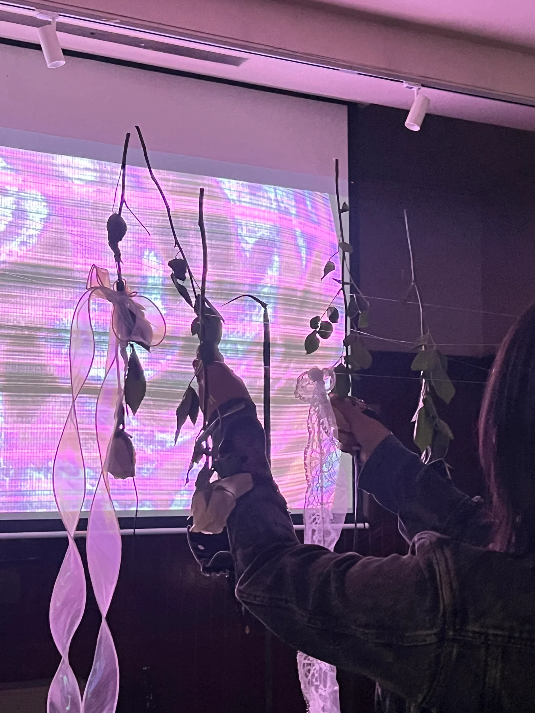

The Meta Rose: Shared Resonance
Melbourne Fringe Festival / 2026
작품 소장 문의
관심 작품과 설치하려는 공간을 알려주세요.
- 이메일
- minniepark.studio@gmail.com
- 제목
- Artwork acquisition enquiry, The Meta Rose: Shared Resonance
주소를 복사해 사용하는 이메일 서비스에서 작성해도 됩니다.

생장미, 관객의 신체와 반응형 디지털 이미지가 명명, 개입, 목격과 재료의 시간을 연결하는 Meta Rose의 멜버른 발표입니다.
멜버른 발표
2026년 9월 30일부터 10월 4일까지 Melbourne Fringe Festival의 일환으로 Docklands에 위치한 The Mission to Seafarers Victoria의 Celia Little Room에서 전시했습니다. 생장미를 매개로 한 촉각적 만남은 여러 층의 무빙이미지와 자연의 질감, 작가가 직접 녹음한 샘플을 포함한 오리지널 사운드스케이프로 이어졌습니다. 개인의 인터랙션과 공동 활성화, 접촉 없이 관찰하는 방식으로 참여할 수 있었습니다.
전시는 받아들여질 만한 사람이 되려 하면서 반복해서 밀어내는 자신의 여러 면에서 출발합니다. 이 장례식은 그 면들을 없애는 의식이 아니라 다른 얼굴로 돌아올 수 있는 자리입니다. 바니타스에서 출발한 장미는 피어 있는 순간에도 시듦을 품고, 해골에는 한때 살아 있던 신체의 시간이 남습니다. 삶과 죽음, 돌봄과 훼손을 서로 이겨야 할 대립이 아니라 동시에 존재하는 조건으로 다룹니다.
명명, 개입, 목격, 기록은 터치와 제스처, 지속적인 관찰과 제작의 기록을 통해 서로 다른 만남을 구성합니다. 모든 작품을 완료하거나 정해진 순서를 따를 필요는 없습니다. 얼마나 가까이, 얼마나 오래 참여할지는 관객이 정합니다. 선택한 색은 시스템이 부여하는 감정이 아니라 자신의 이미지를 다시 찾기 위한 표식입니다.

01 / 명명
참여자는 검은 리본을 잡고 매달린 생장미를 만집니다. 각 장미는 서로 다른 빛과 소리의 층위를 활성화하며, 접촉을 지속하면 반응이 깊어지고 다른 꽃을 만지면 여러 층이 결합됩니다. 흰 리본과 검은 리본을 함께 잡으면 선택한 순간의 캡처를 요청할 수 있습니다.
생화는 인터페이스이면서 접촉에 따라 달라지는 재료입니다. 반복할 수 있는 디지털 반응 옆에서 꽃은 점차 마르고 손길의 흔적을 쌓습니다. 이 작업은 서로 다른 시간을 터치라는 행위 안에 함께 놓습니다.

02 / 개입
물리 버튼 인터페이스와 카메라 기반 트래킹을 통해 관객은 장미이자 스켈레톤인 반응형 신체에 개입합니다. 엄지와 검지로 사각형을 만들면 카메라 마스크가 나타나고, 다섯 손가락을 펼치면 선택한 색과 선택적으로 적은 이름을 지닌 다른 마스크가 나타납니다. 돌보고 훼손하던 형상 위에 자신의 모습을 보며, 행동하는 사람과 그 행동을 바라보는 사람이 동시에 됩니다.
돌봄과 훼손은 단순한 긍정과 부정의 순서로 분리되지 않습니다. 한 균형을 지키는 행동이 다른 균형을 흔들 수 있고, 파괴 뒤에 다시 생명이 돌아오기도 합니다. 이 멜버른 구성에서는 Rose Human Interface의 아무 버튼 두 개를 5초 동안 누르면 캡처를 요청합니다. 이미지는 정답을 증명하기보다 그 불안정한 관계 속에서 선택한 한순간을 남깁니다.

03 / 목격
장미 가까이에서 손을 수직으로 움직여 영상의 속도를 조절합니다. 더 넓은 세계의 이미지와 언어, 시간 속에서 세 번의 느린 목격을 거치며 처음에는 왜곡되어 있던 장미·스켈레톤 형상을 바라봅니다. 형상을 찾았다고 느끼는 순간 장미 버튼을 누릅니다. 반복은 정답을 확인하기 위한 것이 아니라, 시간과 거리, 보는 위치에 따라 같은 이미지가 달라짐을 드러냅니다.
시간은 완전히 멈추지 않습니다. 가만히 머무르며 오래 바라보는 일도 작품의 일부이며, 손이 멈춰도 만남은 끝나지 않습니다. 사운드는 공간의 스피커를 통해 재생됩니다. 형상이 선명해져도 죽음이 사라지는 것은 아닙니다. 왜곡된 얼굴과 그 다른 얼굴을 하나의 서사 안에서 바라보게 합니다.

04 / 기록
기록은 설치 뒤에 놓인 손과 제작의 시간을 다루는 독립된 무성 루프 영상입니다. 전선을 이은 자리와 만들어진 형상, 실패한 테스트와 다시 시작한 연결을 드러냅니다. 반응형 작품을 홍보하거나 설명하는 부록이 아니라, 재료를 다루는 노동과 오류, 반복 자체를 작품의 주제로 둡니다.
정해진 시작과 끝을 요구하지 않으며 여러 사람이 함께 볼 수 있습니다. 관객은 어느 장면에서든 들어오거나 떠날 수 있습니다. 기록은 개인 캡처를 만들거나 다른 작품의 결과를 해석하지 않습니다.
참여 기록과 접근성
멜버른 Phone Hub는 선택한 색과 선택적으로 적은 이름, 명명·개입·목격에서 관객이 요청한 캡처를 위한 선택형 동반 인터페이스입니다. 무작위 장미 번호로 본명을 묻지 않고 그 관람의 이미지를 돌려줍니다. 이는 작품 안의 선택에 관한 흔적이며 감정이나 성격의 객관적인 분류가 아닙니다. 작품 안의 실시간 카메라 처리와 별도 요청 후 이미지를 저장하는 일도 구분합니다.
만지거나 바라보고 듣는 방식 모두 참여가 됩니다. 휴대폰이나 QR·NFC 사용, 이름, 캡처와 설문은 필수가 아닙니다. 관객은 잠시 쉬거나 떠났다가 돌아올 수 있으며, 스태프에게 각 작품에 마련된 대체 입력 방식을 확인할 수 있습니다. 남겨진 데이터보다 관객의 경험을 우선합니다. 전시의 접근성 향상을 위해 Access Fringe의 지원을 받았습니다.
연결된 폰 허브 아카이브에서는 전시 당시의 인터페이스와 캡처 예시를 볼 수 있습니다. 설치와 연결하거나 새로 촬영하지 않으며 관객의 응답을 수집하지 않습니다.
작품 기술 정보
Melbourne Fringe Festival / 2026년 9-10월
- 매체
- 개인의 인터랙션, 공동 활성화 또는 접촉 없이 관찰하는 방식을 허용하는 인터랙티브 설치.
- 재료
- 매달린 생장미, 리본과 전도성 접점, 투사 무빙이미지, 물리 버튼 인터페이스, 카메라와 사운드.
- 설치 크기
- 장소와 설치 구성에 따라 가변.
- 제작 도구
- TouchDesigner, 전도성 터치, 몸과 손 트래킹, 물리 컨트롤과 요청한 캡처를 위한 선택형 Phone Hub.
- 작가 / 제작
- Minnie Park, 작품 구상, 전시 기획 및 제작.
프로젝트 자료
Melbourne Fringe Festival, official 2026 event ↗주요 기록
Visual Index →


작품 소장 문의 →
관심 작품과 설치하려는 공간을 알려주세요.
- 이메일
- minniepark.studio@gmail.com
- 제목
- Artwork acquisition enquiry, The Meta Rose: Shared Resonance
주소를 복사해 사용하는 이메일 서비스에서 작성해도 됩니다.